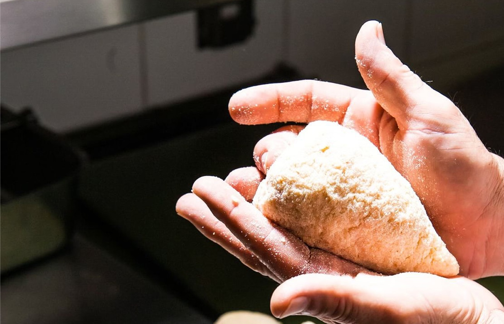
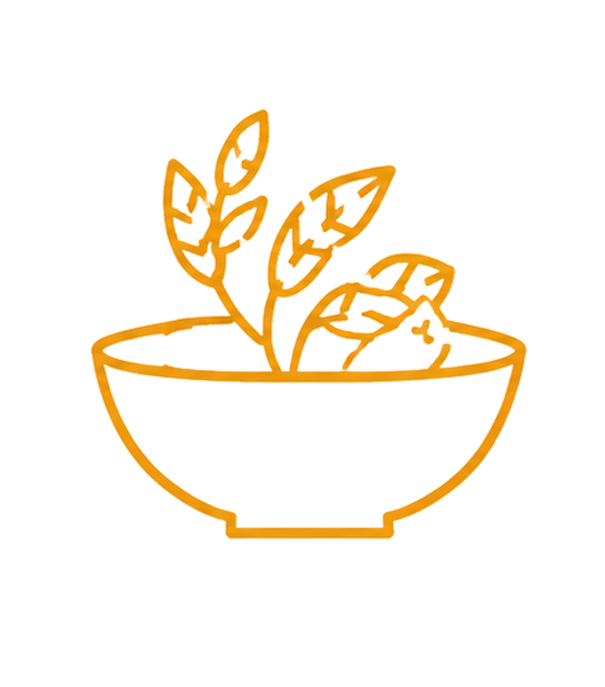
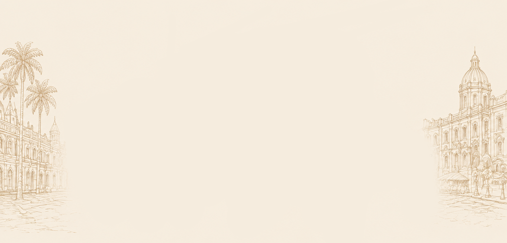

La storia ha inizio con...

IX-XI secolo
con la denominazione araba arriva in sicilia il riso. Nascono i primi impasti che unoscono riso, spezie e ingredienti locali.
XII-XV secolo
Il riso viene aricchito con zafferano,carne, formaggi e piselli. Le ricette iniziano a prendere forma.
XVI-XIX secolo
L’arancino si diffonde nelle cucine popolari e nelle feste di paese, diventato piatto povero ma ricco di gusto.
Oggi
E’ Il re indiscusso dello street food siciliano, amato dai locali e dai turisti in tutto il mondo.

La disputa tra Palermo e Catania...
Arancino o Arancina?
Due città, due forme, una sola passione.
il dibattito che da generazioni accende i palati (e non solo).
Palermo
Arancina
Tonda, compatta e generosa.
Il simbolo dello street food palermitano.


Catania
Arancino
A forma di cono, più piccolo e croccante, con il punto inconfondibile.
Curiosità

Lo zafferano
Dona colore, profumo e un sapore unico.
È l’ingrediente che non può mancare.

Ingredienti poveri
Riso, pane, carne, formaggi e verdure: ingredienti semplici che creano qualcosa di straordinario.

La frittura
Croccante fuori, morbido dentro. La tecnica della frittura è fondamentale per la perfezione.